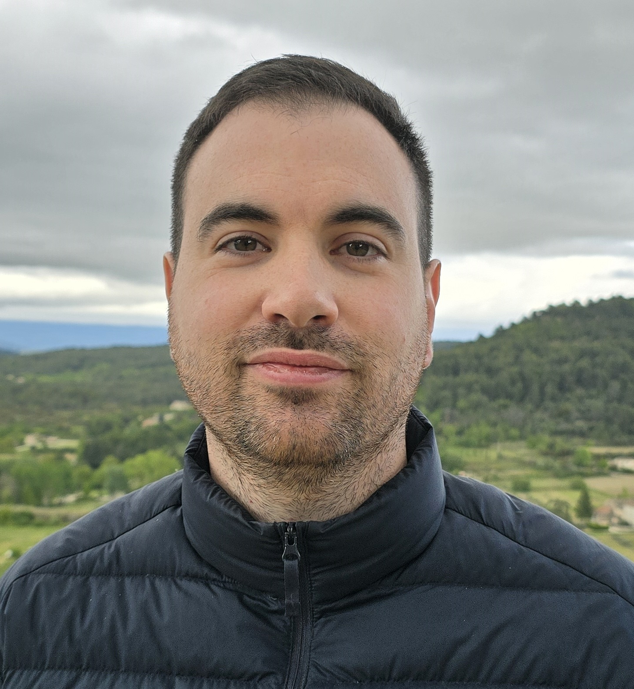

Chi Sono

Francesco Rugiati
Fin da piccolo, i racconti di terre lontane e culture diverse hanno acceso in me una curiosità insaziabile. Questa curiosità si è trasformata in una profonda passione per i viaggi, ma non solo per l'atto di spostarsi: amo immergermi nella fase di ricerca, studiare le destinazioni e, soprattutto, adoro la sfida e la creatività della progettazione di ogni singolo itinerario. Per me, ogni viaggio inizia molto prima della partenza, con la mappa aperta e la mente che già esplora sentieri e città. Spero, attraverso questo blog, di condividere non solo le mie esperienze, ma anche l'entusiasmo e la cura che metto nel pianificare ogni avventura, sperando di ispirarvi!